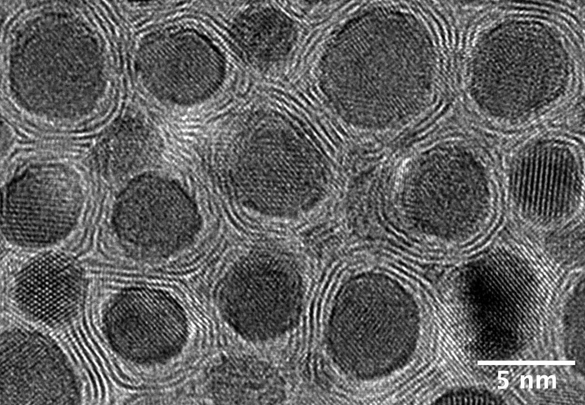
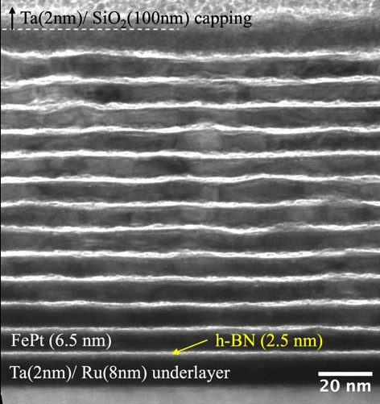

[P-02] Heat-assisted magnetic recording
Keeping the heat in the grain.
To write the next generation of hard drives, you heat a few nanometre-sized grains for a nanosecond. Here is how little of that heat gets past a sheet of h-BN.
- Authors
- Chengchao Xu, Enbo Zhang, Bo-Yuan Yang, B. S. D. Ch. S. Varaprasad, David E. Laughlin, Jian-Gang Zhu
- Published
- IEEE Transactions on Magnetics 61(4), 2025
- Carnegie Mellon University
- Result
- 0.60 W/m·K across the stack
- Less than window glass
A sharp bit needs a sharp hot spot.
Heat that leaks sideways blurs the edge of every bit. Walls of h-BN between the grains could stop it — if heat really struggles to cross them. We measured how much it does.
Chapter 1
Writing with heat.
A laser, a gold antenna and a magnet, all on a slider flying nanometres above the disk.
How heat-assisted magnetic recording writes a bit
The drive
A head, flying over a spinning disk.
The slider rides on a cushion of air, nanometres above the surface. Everything that writes a bit sits at its trailing edge.
Laser to antenna
Light, squeezed below its own size.
A laser diode feeds a waveguide down to a near-field transducer: a tiny gold antenna that focuses the light into a spot far smaller than its wavelength.
Heat, write, freeze
Too stable to write — until it's hot.
FePt grains hold their magnetization so firmly that no head field can flip them at room temperature. The spot heats a few grains past their Curie point, the write pole sets them, and they freeze as they cool.
The thermal gradient
The edge of the heat is the edge of the bit.
Each bit freezes where the temperature falls through the Curie point. The steeper that fall, the sharper and more evenly placed the bits.
The interactive 3D view isn't available in this browser. In heat-assisted magnetic recording, a laser on the slider feeds a gold near-field transducer that heats a few grains of FePt media past their Curie point; the write pole sets their magnetization and the bits freeze as the grains cool.
Chapter 2
A medium with walls of h-BN.
Grains of FePt, each wrapped in a few atomic sheets of hexagonal boron nitride.
How h-BN grain boundaries keep the hot spot sharp
The film
Billions of tiny magnets.
The recording layer is a mosaic of columnar FePt grains, each magnetized up or down. Underneath, a heat sink pulls heat away.
Inside a grain
Ordered metal, layered walls.
In L1₀ FePt, iron and platinum stack in alternating atomic planes — the source of its huge stability. Between the grains, h-BN lies in thin, layered sheets.
Heat it
Heat goes down, not sideways.
h-BN carries heat well along its sheets but poorly across them. Walled in, the heated grains dump their heat into the sink below instead of warming their neighbours.
Compare
h-BN or carbon?
With a conventional carbon boundary, heat spreads sideways and the hot spot's edge goes soft. A 1 nm h-BN wall resists heat about twice as much as 1 nm of carbon (carbon value measured by Ho et al.).
h-BN walls: a tight hot spot.
The interactive 3D view isn't available in this browser. The recording layer is made of columnar L1₀ FePt grains separated by layered h-BN. Because heat crosses h-BN sheets poorly, a heated grain sends its heat down into the heat sink rather than sideways into its neighbours, keeping the hot spot sharp.
Seen from above
The real film, grain by grain.
An electron micrograph looking straight down on FePt-(h-BN) media. Every grain sits inside its own ring of h-BN.

Chapter 3
Counting layers with X-rays.
Before putting a number on each interface, you need to know the stack: how thick each layer is, and how many there are.

How X-ray reflectivity measures the layer thicknesses of the multilayer
X-ray reflectivity
A beam that barely grazes the film.
X-rays strike the stack at a glancing angle of a degree or two, and a detector on the other side collects what bounces off. The angle is exaggerated here.
Interference
Every interface reflects a little.
Each boundary between h-BN and FePt sends back a weak copy of the beam. The copies travel different distances, so at some angles they add up and at others they cancel.
Scan the angle
Peaks for the period, fringes for the whole.
The tall superlattice peaks are spaced by the repeat period. The small fringes between them are set by the thickness of the whole stack: ideally N − 2 of them for N periods.
The measured curves
More periods, more fringes.
The paper's scans of the 4-, 7-, 10- and 13-period samples. Superlattice peaks are clear from 7 periods up. The fringe counts, 2, 5, 8 and 10, track N − 2; the thickest stack is one short.
Checked against TEM
Same stack, seen two ways.
Fits to the X-ray curves give a period of 8.7 to 9.5 nm across the samples. A cross-section TEM of the 13-period sample shows about 9.3 nm.
The animated view isn't available in this browser. In X-ray reflectivity, X-rays strike the [h-BN/FePt]×N multilayer at a grazing angle. Each interface reflects part of the beam, and the reflections interfere: sweeping the angle gives tall superlattice peaks, spaced by the layer period, with small Kiessig fringes between them set by the total thickness. The measured curves of the 4-, 7-, 10- and 13-period samples show 2, 5, 8 and 10 fringes. Fits gave a period of 8.7 to 9.5 nm, in agreement with the cross-section TEM above.
Reading thickness off the curve
One scan, three lengths.
Each feature of the curve ties to a length. At these small angles the rule is the same every time: angle spacing ≈ wavelength ÷ length. Cu Kα X-rays have λ = 0.154 nm.
-
01
Total thickness
From the Kiessig fringes
The top and bottom of the film reflect like the two faces of a soap film, giving small, evenly spaced fringes. Thicker film, closer fringes.
D ≈ λ / Δ(2θ)a 120 nm film: fringes ≈ 0.07° apart
-
02
Repeat period
From the superlattice peaks
The repeating h-BN/FePt pairs act like planes in a crystal and give tall peaks. Same rule; a period is much thinner than the film, so the peaks sit much farther apart.
Λ ≈ λ / Δ(2θ)a 9 nm period: peaks ≈ 1° apart
-
03
The split inside a period
From the peak heights, by fitting
The split between h-BN and FePt changes how tall the peaks are, not where they sit, so it comes from a fit rather than a spacing. Design: 2.5 nm h-BN + 6.5 nm FePt.
-
04
A count to check
Fringes between two peaks
N periods give N − 2 fringes between neighbouring peaks, a check that needs no fit. The four samples show 2, 5, 8 and 10.
fringes = N − 213 → 11 expected, 10 seen
The full fit
The spacings give starting values. The final numbers come from a layer-by-layer model (thickness, density and roughness for each layer) whose calculated curve is fitted to the measured one. Density sets where the reflection first drops; roughness sets how fast the curve falls. The fits give a period of 8.7 to 9.5 nm.
What the X-rays measured
The stack is the stack we meant to grow.
X-rays average over the whole area under the beam; TEM looks at one thin slice. The two agree.
Repeat period
8.7–9.5 nm
From fits to the XRR curves of the 4-, 7-, 10- and 13-period samples.
Designed period
2.5 + 6.5 nm
An h-BN layer plus an L1₀ FePt layer, as designed. TEM shows about 9.3 nm per period.
Fringes counted
2 · 5 · 8 · 10
For 4, 7, 10 and 13 periods. Ideally N − 2; the thickest stack is one short, likely from roughness that builds up toward the top.
Chapter 4
Measuring heat across a few atoms.
Stack the interface many times over, then measure how hard it is for heat to get through.
The differential 3ω measurement of an h-BN/FePt multilayer
The sample
One interface, repeated.
Thin h-BN and L1₀ FePt layers, sputtered in turn on silicon. More periods means more interfaces for the heat to cross. A gold heater line sits on top.
The 3ω method
Drive at ω. Heat at 2ω. Listen at 3ω.
An AC current heats the line twice per cycle. Its resistance follows the temperature, so a faint voltage appears at three times the drive frequency — a thermometer built into the heater.
Differential
Same heater, with and without the film.
A reference chip without the multilayer runs side by side. The extra temperature rise on the sample is the film's thermal resistance, and its growth with the number of periods isolates the interfaces.
At the interface
Heat bounces off a van der Waals gap.
h-BN binds to FePt only weakly. Most lattice vibrations reach the gap and reflect, so very little heat crosses each interface.
The interactive 3D view isn't available in this browser. A gold heater line on an [h-BN/FePt]×N multilayer is driven by AC current at ω; it heats at 2ω and its 3ω voltage gives the temperature rise. Comparing with a reference chip without the multilayer gives the film's thermal resistance. Weak van der Waals bonding at the h-BN/FePt interfaces reflects most lattice vibrations.
The result
Very little heat gets through.
Mostly metal, yet across the stack it conducts heat less well than window glass. Over 80% of the resistance sits at the interfaces.
Effective conductivity, cross-plane
0.60 ± 0.05 W/m·K
For the [h-BN/FePt] multilayer, from differential 3ω measurements.
Interface conductance
67.9 ± 6.6 MW/m²·K
Across FePt / h-BN / FePt at room temperature: weak van der Waals bonding.
Stack
h-BN / L1₀ FePt
Nanometre-thin layers, repeated 4 to 13 times on silicon.
Method
Differential 3ω
A heater that is also its own thermometer, against a reference chip.
For HAMR
Isolated grains
Data for designing media whose grains keep their heat to themselves.
The paper
Ultralow thermal conductance across the [FePt/h-BN/FePt] interface.
C. Xu, E. Zhang, B.-Y. Yang, B. S. D. Ch. S. Varaprasad, D. E. Laughlin, J.-G. Zhu. IEEE Transactions on Magnetics 61(4), 2025.
My role
Co-author, at the Data Storage Systems Center.
I built the differential 3ω measurement station and validated it against silicon, as part of the Carnegie Mellon team developing FePt-(h-BN) media for heat-assisted recording.
- Recording physicsFrom media to the thermal gradient.
- Thermal metrologyHeat, measured electrically.
- 2D materials on metalWhere van der Waals meets FePt.
Want the details?
I'm happy to walk through HAMR, the media or the measurement.